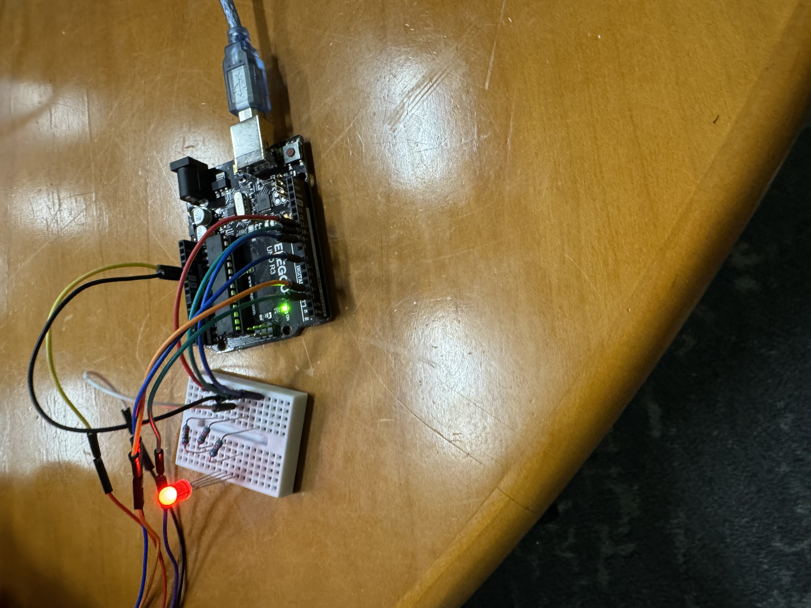
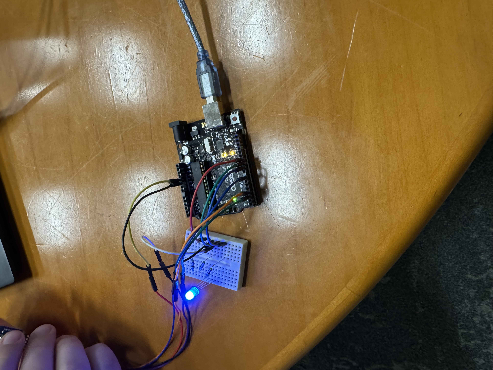
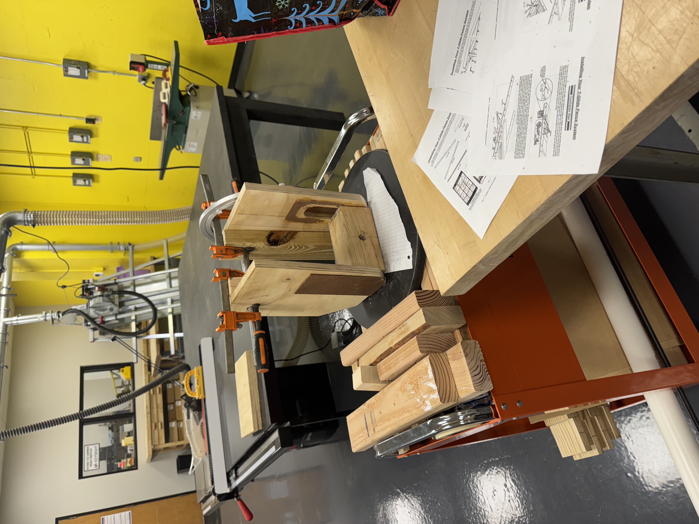

Recent Mechanical Engineering graduate from the University of Dayton with a strong
interest in mechanical design, manufacturing, and electromechanical systems. Experienced in CAD,
prototyping, and hands-on engineering projects ranging from product development to automation.
Worked with a multidisciplinary team to design and prototype the Saturn Strap — an innovative
football helmet chin strap developed for startup Saturn Sports.
The device measures strap tension and alerts players when the strap is too loose, improving helmet safety.
The Saturn Strap design was constrained by existing football helmet patents, limiting modifications strictly to the chin strap housing. As a result, the design prioritized functionality over aesthetics while ensuring compatibility with current helmet systems. A rotating cylindrical mechanism was developed to allow the chin strap to pass through the housing, where sensor-based rotation measurements were used to determine strap tension. This approach enabled accurate fit detection while maintaining a compact and durable mechanical design.
Testing of the Saturn Strap focused on validating sensor performance, system reliability, and overall functionality under realistic use conditions. The prototype was evaluated by measuring chin strap tension and confirming proper system response through an LED indicator system, which displayed red when the strap was too loose and blue when proper tension was achieved. To improve accuracy across different users and helmet configurations, a calibration mode was implemented, allowing the system to establish a baseline tension value before operation.
Working directly with a client added another layer of complexity, requiring the team to balance technical performance with real-world usability and design constraints. This experience strengthened skills in communication, adaptability, and engineering decision-making while emphasizing the importance of meeting client expectations within technical and patent-related limitations.
Worked with a team at Dayton Photonics to design and build a calibration cart
for the company’s Theia optical testing unit. The cart was designed to precisely pan and tilt
while supporting up to 70 pounds, allowing for accurate and repeatable calibration positioning.
The Dayton Photonics calibration cart was designed to support and accurately position the company’s Theia optical unit, with primary design constraints centered around load capacity and controlled motion. The system was required to safely support a minimum load of 70 pounds while maintaining smooth and repeatable movement.
The final design incorporated a custom mounting interface, a 360-degree pan mechanism, and a ±50° tilt range, allowing precise alignment during calibration procedures. Structural components were selected and sized to ensure rigidity under load while maintaining ease of adjustment and transport.
Testing focused on verifying load stability, smooth motion through the full pan and tilt range, and overall structural integrity under operating conditions. The project emphasized mechanical design tradeoffs, load analysis, and practical manufacturing considerations, while reinforcing the importance of designing to real-world constraints and client requirements.
School Projects
Autonomous robot testing — line following and plant watering
School Project — Autonomous Plant-Watering and Weed-Killing Robot
Solo project using Arduino, IR sensors, ultrasonic sensors, and servos to design a robot capable
of following a line and performing automated plant watering and weed removal
along its path.
Handled wiring, coding, and control logic independently, resulting in a fully functional autonomous prototype.
School Project — Golf Ball Path Optimization
Solo analytical project focused on determining the optimal path for a golf ball to reach the hole
by analyzing slope, friction, and ball dynamics.
Applied physics-based modeling, vector analysis, and MATLAB simulation to compare trajectories
and optimize performance under realistic conditions.
Research
Research Project — Recycling Plastic Waste into 3D Printing Filament
Worked with a faculty advisor to develop a process for recycling used plastic dining hall silverware into usable 3D printer filament. The project focused on evaluating material properties, processing methods, and consistency of recycled plastics for additive manufacturing applications.
My role included material preparation and shredding.. The project demonstrated the feasibility of repurposing campus waste into functional manufacturing material while promoting sustainable engineering practices.
Resume
Download my full resume below or explore key highlights of my skills and experience.
Fabrication & Prototyping: 3D Printing, CNC Machining
Testing & Measurement: Oscilloscopes, Load Testing, Data Acquisition
Other Tools: Microsoft Office, GD&T, Project Documentation
I earned my undergraduate degree in Mechanical Engineering from the University of Dayton, where I focused on mechanical design, manufacturing, and mechatronics. My experience includes hands-on prototyping using 3D printers and the wood shop, along with coursework in mechanics of machinery, MATLAB, and manufacturing processes. I enjoy translating ideas into functional designs through iterative prototyping, CAD, and practical fabrication, and I bring a strong blend of analytical thinking and hands-on problem-solving to my work.



I completed a certificate program through the Italian Design Summer School in Bologna, where I studied industrial and product design through both coursework and hands-on experience. The program included visits to the Lamborghini and Ducati factories, as well as textile, chocolate, and gelato production facilities, providing insight into real-world manufacturing and design processes. I worked on a collaborative, multidisciplinary project with an international team to design a modular furniture concept using a ceramic material engineered to be glazed like marble. This experience strengthened my understanding of product design, material application, and cross-cultural collaboration within a professional design environment.
Contact Me
Feel free to reach out — I'm always open to discussing mechanical design, robotics, and engineering opportunities.


.jpg)